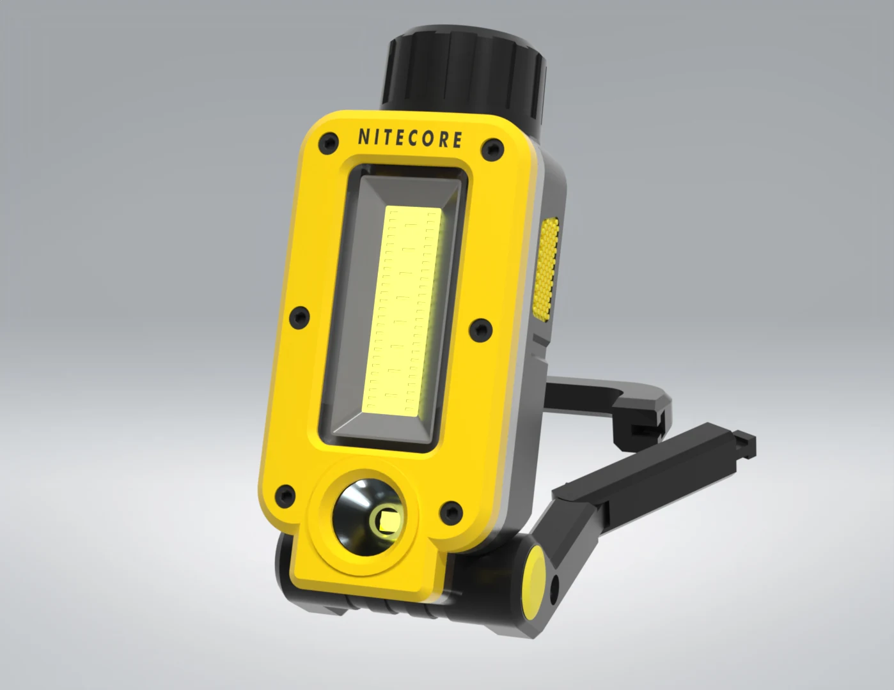
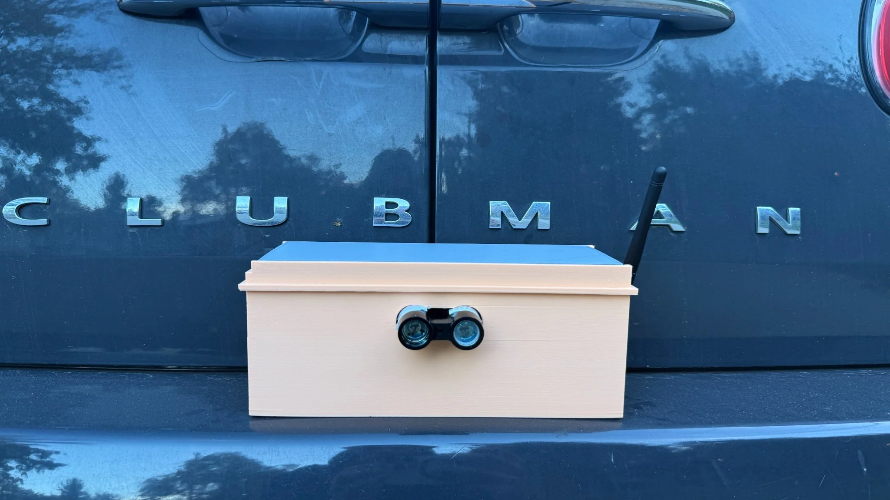

The Work
Projects
Completed projects and ongoing work in mechanical design, construction, and electronics.
4 projects

01Reverse Engineering · SOLIDWORKS
Nitecore NWL20
I disassembled and measured a Nitecore work light, then modeled its parts and assembly in SOLIDWORKS.
 02
02Construction · Project Leadership
Eagle Scout Service Project
I planned and led a shed and accessible-sink project for Animal Assisted Happiness.
Ongoing ProjectCU Autonomous Racing
Mechanical Design · Onshape
CU Autonomous Racing
Completed kart chassis CAD for the master assembly, with steering design ongoing.

04Software · Electronics & Integration
Approaching Vehicle Warning System
A two-device prototype that estimates closing speed and warns the driver through an OLED display and speaker.